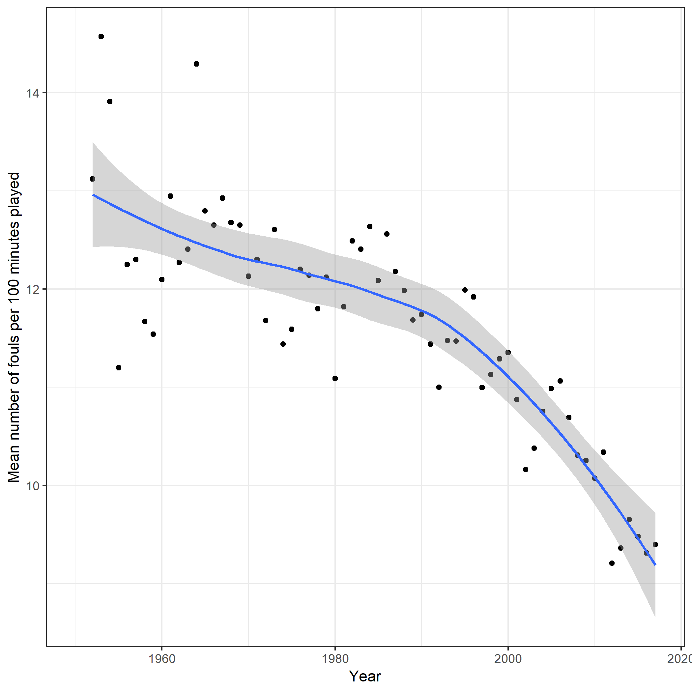

Authors: @mangianteg @krishnasini
The National Basketball Association is a men’s professional basketball league in North America, composed of 30 teams. We analyze a dataset of NBA players obtained from Kaggle.com (“https://www.kaggle.com/drgilermo/nba-players-stats#player_data.csv”) to obtain some interetsing findings.
In a game, every player is allowed 5 personal fouls per game. These fouls can arrise from various reasons but in general entail harming another player. We analyze the data on fouls to check the determinants of fould and if there is a trend in the average fouls per game over the years.
From the source, we download two datasets. One is a cross-section dataset containing the player characteristics for 3923 players. The other is a panel data containing player statistics over time. We merge these two datasets to obtain a balanced pane of 24961 observations over 68 years from 1950 through 2017.
We start by plotting the fouls over time. In particular, we consider as the variable of interest the fouls per 100 minutes player for each player. Thus, in the plot below, on the x-axis is years and on the y-axis is the average fouls per 100 minutes played, for the whole year.
we see that the rate of fouls is declining over time. This could be because humans have evolved over time or simply because referees don’t call as many fouls as before. A detailed discussion is beyond the scope of this report.
We now look at the effect of fouls on future fouls using regressions analysis. The link to the table can be found here.In specification (1) the only explanatory variable we include is the lag of fouls for the previous year. We see the effect of this variable is positive indicating that a person who fouls in a year is more likely to foul in subsequent years. However, this may be a spurious state dependence indicating simply that some players are likely to foul and that it is their inherent characteristics that make them foul more in the future periods.